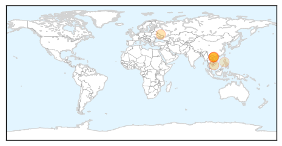
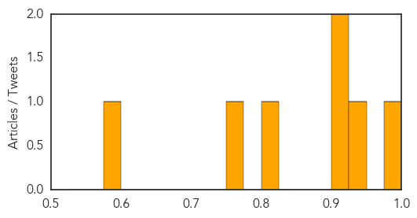
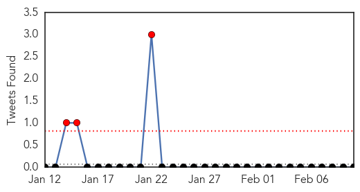

Measles
30-Day Web Trend
0 alerts, 0 warnings
30-Day Twitter Trend
0 alerts, 0 warnings

Article Locations
Article Confidences
Top Articles:
- 0.996
- Vietnam Capital City Faces Measles Epidemic
- 0.948
- No H7N9 Infection Found in Vietnam Northern Province: NIHE
- 0.918
- Measles Epidemic Spreads Among Russian Baptists
- 0.911
- Health Ministry calls on preventive measures against measles
- 0.813
- Measles threat looms large
- 0.764
- Measles threat puts on high alert in Vietnam
- 0.595
- Measles outbreak in Philippines slowly spreading to Canada
Top Tweets:
-
No tweets found for Feb 10, 2014
Influenza
30-Day Web Trend
0 alerts, 0 warnings
30-Day Twitter Trend
7 alerts, 0 warnings

Article Locations
Article Confidences
Top Articles:
- 1.000
- Fast-Spreading Bird Flu Causes Panic in China
- 0.999
- Influenza Virus Raises California Body Count
- 0.997
- Flu virus packing a wallop locally; experts advise getting a flu shot
- 0.995
- Flu affecting mostly young, obese adults this year
- 0.990
- H7N9 Flu, Year Two: What Is Going On?
- 0.971
- Man Dies Of Bird Flu In China
- 0.967
- Flu cases up dramatically in Miller County
- 0.894
- Influenza Recovery Time May Last Longer for Those Battling Obesity
- 0.890
- Oklahoma governor urges health precautions for flu
- 0.855
- H7N9 illness total grows by 13, with 2 more deaths
- 0.823
- Officials: Sutter County flu victim was younger than 18
- 0.810
- Scientists Track Avian Flu Variant Across Egypt
Top Tweets:
-
No tweets found for Feb 10, 2014